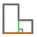

Mit der Funktion „Teilen“ kann das Werkstück anhand des Bezugs, der Seite, einer senkrechten Linie oder einer benutzerdefinierten Linie geteilt werden.
Die Benutzeroberfläche für diese Funktion sieht ähnlich wie in der folgenden Abbildung aus:

Parameter
Um diese Bearbeitung zu verwenden, muss zunächst einer der drei verfügbaren Modi über die entsprechende Schaltfläche ausgewählt werden:
 | Paralleler Schnitt |
 | Orthogonaler Schnitt |
 | Schnitt durch zwei Punkte |
Parameter für „Paralleler Schnitt“ und „Orthogonaler Schnitt“
Für die nächsten beiden untenstehenden Schaltflächen kann diese Funktion über das Kontrollkästchen rechts neben der Beschriftung „Schnittverlängerung“ aktiviert oder deaktiviert werden.
Schnitte verlängern | Mit dieser Funktion kann der Bediener den auf die ausgewählte Seite angewendeten Schnitt verlängern, sodass er sich in Schnittrichtung über die gesamte Länge des Werkstücks erstreckt. |
Offset | Der Bediener kann den Abstand des Schnitts entlang der Querachse einstellen, gemessen von der Mitte der Bezugsseite. |
Parameter für „Schnitt durch zwei Punkte“
Für die nächste Schaltfläche können die Koordinaten der beiden Punkte festgelegt werden, aus denen die Trennlinie besteht.
Parameter der Punkte der Trennlinie einstellen | Nach Aktivierung der Funktion stehen vier Parameterfelder zur Verfügung, in denen der Bediener die Koordinaten (X, Y) des Start- und Endpunkts der Schnittlinie angeben kann. |
 | Schnittausrichtung |
 | Eckpunktfang |
Ausführung der Bearbeitung
Die Bearbeitung kann angewendet werden, indem die Schaltfläche links neben dem entsprechenden Schnitt in der Polygonliste gedrückt wird.
Ein rotes Symbol mit einem „X“ zeigt an, dass die Bearbeitung nicht auf den gewünschten Schnitt angewendet werden kann.
Paralleler Schnitt
In der folgenden Abbildung wurde ein paralleler Schnitt am Werkstück ausgeführt, das bereits auf dem Titelbild des Kapitels dargestellt wurde:

Orthogonaler Schnitt
In der folgenden Abbildung wurde ein orthogonaler Schnitt am Werkstück ausgeführt, das bereits auf dem Titelbild des Kapitels dargestellt wurde:

Schnitt durch zwei Punkte
In der folgenden Abbildung wurde ein Schnitt durch zwei Punkte mithilfe der Eckpunktfangfunktion am Werkstück ausgeführt, das bereits auf dem Titelbild des Kapitels dargestellt wurde:

In der folgenden Abbildung wurde ein Schnitt durch zwei Punkte ohne Verwendung einer besonderen Funktion am Werkstück ausgeführt, das bereits auf dem Titelbild des Kapitels dargestellt wurde:

Werkstücke teilen
Wenn dem ausgewählten Werkstück über Teilungsbearbeitungen ein oder mehrere Werkstücke zugeordnet wurden, erscheint oben im Panel „Werkstück bearbeiten“ eine spezielle Schaltfläche zur Verwaltung der zugeordneten Werkstücke.
 | Werkstücke teilen |
|---|
Vor dem Teilen werden die zugeordneten Werkstücke im Arbeitsbereich als Einheit verwaltet. In diesem Zustand wird ein Block aus mehreren Elementen erstellt, auf die dieselben Vorgänge angewendet werden, ohne dass sie bereits getrennt sind.
Wird beispielsweise eines der durch Teilen erzeugten Werkstücke aus der Werkstückliste dem Arbeitsbereich hinzugefügt, werden automatisch auch alle anderen zugeordneten Elemente eingefügt.
Beim Drücken der Schaltfläche Werkstücke teilen, wird jedes durch Teilen erzeugte Werkstück vom ursprünglichen Werkstück getrennt und als unabhängiges Element behandelt.
Anschließend verschwinden sowohl die Liste der zugeordneten Werkstücke, die zuvor oberhalb der Vorschau im Panel Werkstück bearbeiten sichtbar war, als auch die Schaltfläche zum Teilen der Werkstücke aus der Benutzeroberfläche.